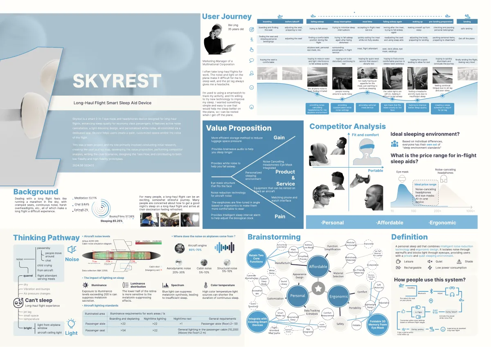
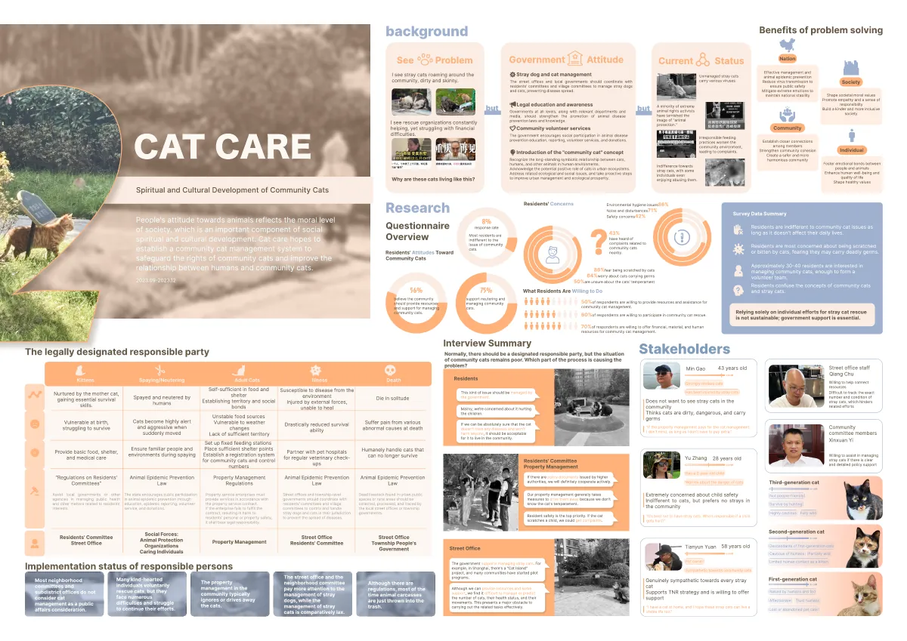
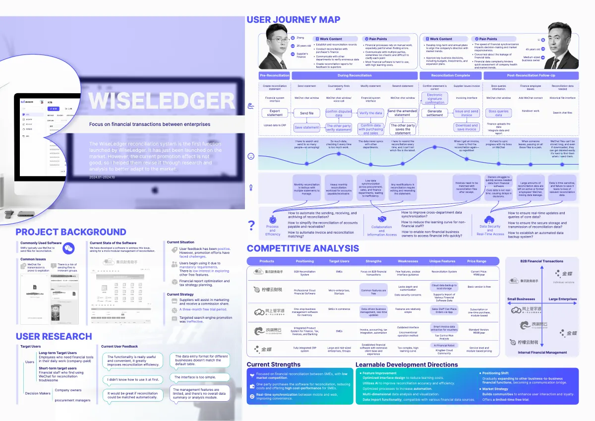
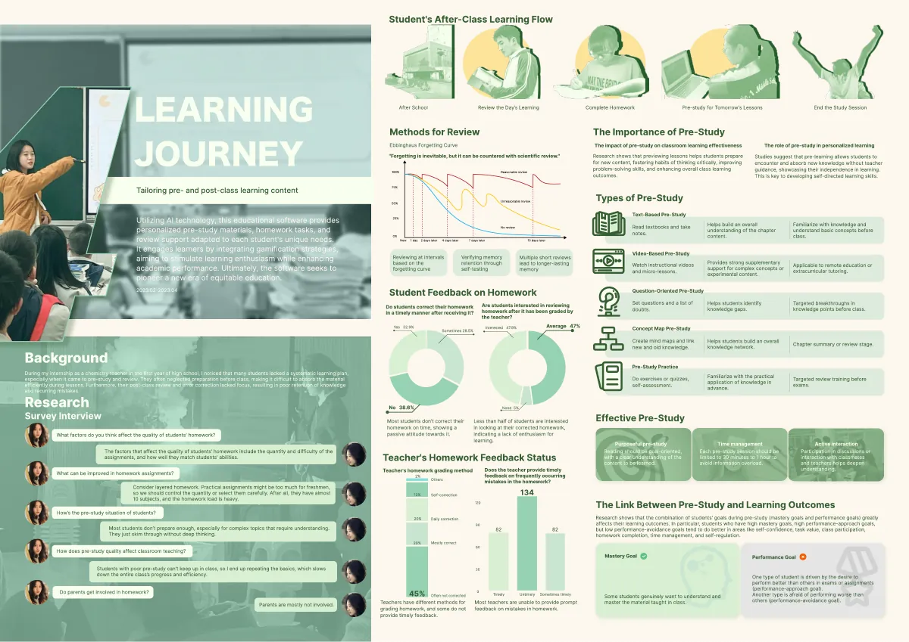

04 · ARCHIVE · 档案库
Archive
工作过程与素材资源库——草图、文档、截图和那些还没做完的事，都在这里沉淀。
灵活规划（Replan）反馈驱动的持续规划系统 · 收束中
书签助手 · Bookmark系统 · 核心链路跑通
随手做菜系统 · MVP 内测中
LLM Synthetic Users毕设 · 开题中

SKYREST服务设计 · 智能睡眠辅助设备

CAT CARE服务设计 · 社区流浪猫治理

WISELEDGER服务设计 · 企业财务协作

LEARNING JOURNEY服务设计 · 课前课后学习体验
工作过程的原始材料（草图 / PRD / 评测报告）整理脱敏后会陆续放进来。